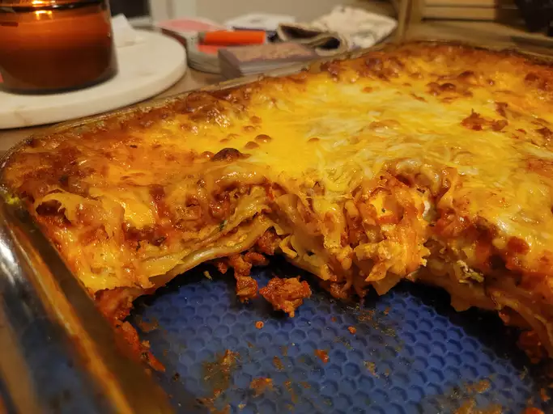

Home
World's best lasagna

Description
This lasagna recipe takes a little work, but it is so satisfying and filling that it's worth it!
Timing
- Prep Time: 30 mins
- Cook Time: 2 hrs 30 mins
- Additional Time: 15 mins
- Total Time: 3 hrs 15 mins
- Servings: 12
Nutrition Facts
- Calories: 448
- Fat: 21g
- Carbs: 37g
- Protein: 30g
Ingredients
- 1 pound sweet italian sausage
- 3/4 pound lean ground beef
- 1/2 cup minced onion
- 2 cloves garlic, crushed
- 1 (28 ounce) can crushed tomatoes
- 2 (6.5 ounce) cans canned tomato sauce
- 2 (6 ounce) cans tomato paste
- 1/2 cup water
- 2 tablespoons white sugar
- 4 tablespoons chopped fresh parsley, divided
- 1 1/2 teaspoons dried basil leaves
- 1 1/2 teaspoons salt, divided, or to taste
- 1 teaspoon italian seasoning
- 1/2 teaspoon fennel seeds
- 1/4 teaspoon ground black pepper
- 12 lasagna noodles
- 16 ounces ricotta cheese
- 1 egg
- 3/4 pound mozzarella cheese, sliced
- 3/4 cup grated Parmesan cheese
Directions
- Gather all your ingredients.
- Cook sausage, ground beef, onion, and garlic in a Dutch oven over medium heat until well browned
- stir in crushed tomatoes, tomato sauce, tomato paste, and water. Season with sugar, 2 tablespoons parsley, basil, 1 teaspoon salt, italian seasoning, fennel seeds, and pepper. Simmer, covered, for about 1 1/2 hours stirring occasionally.
- Bring a large pot of lightly salted water to a boil. Cook lasagna noodles in boiling water for 8 to 10 minutes. Drain noodles ans rinse with cold water.
- In a mixing bowl, combine ricotta cheese with egg, remaining 2 tablespoons parsley, and 1/2 teaspoon salt.
- Preheat the oven to 375 degrees F (190 degrees C)
- To assemble, spread 1 1/2 cups of meat sauce in the bottom of a 9x13-inch baking dish. Arrange 6 noodles lengthwise over meat sauce, overlapping slightly. Spread with 1/2 of the ricotta cheese mixture. Top with 1/3 of the mozzarella cheese slices. Spoon 1 1/2 cups meat sauce over mozzarella, and sprinkle with 1/4 cup Parmesan cheese.
- Repeat layers, and top with remaining mozzarella and Parmesan cheese. Cover with foil: to prevent sticking, wither spray foil with cooking spray or make sure the foil does not touch the cheese.
- Bake in the preheated oven for 25 minutes. Remove the foil and bake for an additional 25 minutes.
- Rest lasagna for 15 minutes before serving
Home